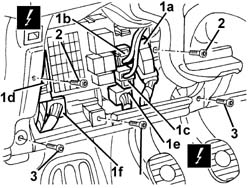
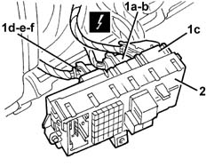
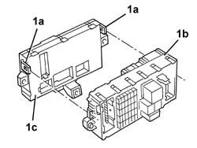

5505A10 IGNITION COIL/S - R+R
- Path
- Procedures > 55 ELECTRICAL EQUIPMENT > 5505 INSTRUMENT/GUAGE ELECTRICAL WIRING > 5505A MULTI-FUNCTION COMPONENTS > 5505A10 IGNITION COIL/S - R+R
- Kind
- repair procedure (removal / refitting; the operation number is the code)
- Applies to
- all engines; all production periods
- Interactive page
- https://sloeber94.github.io/elrnDB-aGt/en/#/125001582
Applies to: all engines; all production periods
 Removing
Removing
 Refitting
RefittingOp. 7040A37 FUSE BOX COVER - R R
1. Disconnect the electrical connections at the front (1a, 1b, 1c, 1d, 1e, 1f).
Name | Connector | |
|---|---|---|
1a | Junction unit under dashboard | See B2A JUNCTION UNIT UNDER DASHBOARD ( FRONT ) |
Name | Connector | |
|---|---|---|
1b | Junction unit under dashboard | See B2B JUNCTION UNIT UNDER DASHBOARD ( REAR ) |
Name | Connector | |
|---|---|---|
1c | Junction unit under dashboard | See B2C JUNCTION UNIT UNDER DASHBOARD ( FRONT ) |
Name | Connector | |
|---|---|---|
1d | Junction unit under dashboard | See B2D JUNCTION UNIT UNDER DASHBOARD ( REAR ) |
Name | Connector | |
|---|---|---|
1e | Body computer | See M1A BODY COMPUTER ( FRONT ) |
Name | Connector | |
|---|---|---|
1f | Body computer | See M1E BODY COMPUTER ( REAR ) |
2. Undo the bolts fixing the control unit.
3. Undo the bolts shown fixing the dashboard cover.

Applies to: all engines; all production periods
1. Move the control unit/body computer assembly slightly and disconnect the electrical connections at the rear (1a, 1b, 1c, 1d, 1e, 1f).
Name | Connector | |
|---|---|---|
1a | Junction unit under dashboard | See B2F JUNCTION UNIT UNDER DASHBOARD ( FACIA ) |
Name | Connector | |
|---|---|---|
1b | Junction unit under dashboard | See B2G JUNCTION UNIT UNDER DASHBOARD ( FACIA ) |
Name | Connector | |
|---|---|---|
1c | Junction unit under dashboard | See B2H JUNCTION UNIT UNDER DASHBOARD ( FACIA ) |
Name | Connector | |
|---|---|---|
1d | Body computer | See M1B BODY COMPUTER ( FACIA ) |
Name | Connector | |
|---|---|---|
1e | Body computer | See M1C BODY COMPUTER ( FACIA ) |
Name | Connector | |
|---|---|---|
1f | Body computer | See M1D BODY COMPUTER ( FACIA ) |
2. Recover the control unit/body computer assembly.

Applies to: all engines; all production periods
1. Work at the bench and release the retainers (1a) , separate the junction unit (1b) from the body computer.

Applies to: all engines; all production periods
Refitting
RemovingCheck that the junction unit is not damaged and, if necessary, check the internal connections.
At the bench, connect the junction unit from the body computer and attach the retainers.
Connect the rear electrical connections.
Position the junction unit.
Tighten the bolts.
Connect the front electrical connections.
Op. 7040A37 FUSE BOX COVER - R R
Test the electrical system.
Topics linked from this page (1)
Topics that link to this page (13)
- 5040A80 EXPANSION/CONNECTION PIPE - R R
- 5040B30 EXPANSION VALVE (TUBE ORIFICE) - R+R
- 5040C15 AIR CONDITIONER HOUSING - R R WITH FACIA DISCONNECTED FOR VERSIONS WITH PASSENGER AIRBAG
- 5040C50 AIR CONDITIONER HEATER RADIATOR - R+R
- 5040C64 A/C MANUAL CONTROL SWITCH (ONE) - R+R
- 5040D84 AIR CONDITIONER LEFT HAND AIR MIXER FLAP CONTROL MOTOR - R R
- 5040D90 AIR CONDITIONER SYSTEM WIRING BUNDLE - R R
- 5505A32 BODY COMPUTER - R R
- 5505A33 BODY COMPUTER - R R WITH JUNCTION UNIT REMOVED
- 5505C28 INTERGRATED ENGINE BAY AND ABS SYSTEM WIRING - R R
- 5505C34 INTERGRATED INSTRUMENT UNDER FACIA FRONT AIR BAG WIRING - R R
- 7040A97 FACIA TRIM SUPPORT BEAM - R R
- 7040A98 INSTRUMENT FACIA TRIM SUPPORT BEAM - R R WITH FACIA REMOVED